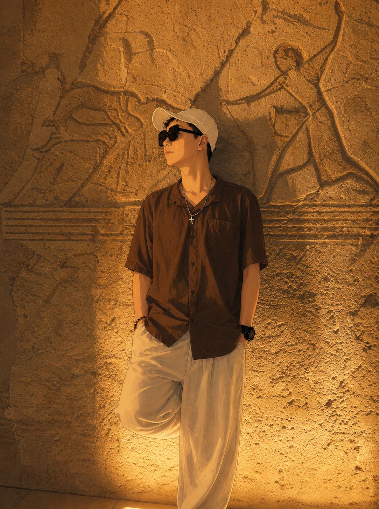

尊重
尊重是交流的起点，也是协作的底线。

02 / ABOUT
个人蓝图档案
我是 Peter，94 年双子座，程序员，E 人。现在认真学习 AI，也喜欢旅行和徒步。最有记忆点的一次经历，是在埃及过生日。
 Curiosity / 好奇心驱动
Keep learning / 持续学习
Respect / 保持尊重
Curiosity / 好奇心驱动
Keep learning / 持续学习
Respect / 保持尊重
REC
把生日过在埃及
旅行、徒步、在路上。不是为了包装成什么人设，只是把真的经历留下来。



// 04 / WORK
把当前状态跑成一段终端日志
正在运行的开发会话：学习 AI、写代码、整理旅行记录，保持尊重，继续往前。
05 / IDEAS
想法 / 学习 / 记录
把思考写下来，让成长看得见。
尊重是交流的起点，也是协作的底线。
理解原理，动手实践，把知识变成能力。
走过的路，看过的世界，塑造现在的我。
06 / CONTACT
聊聊 AI、代码，或者下一段旅程。